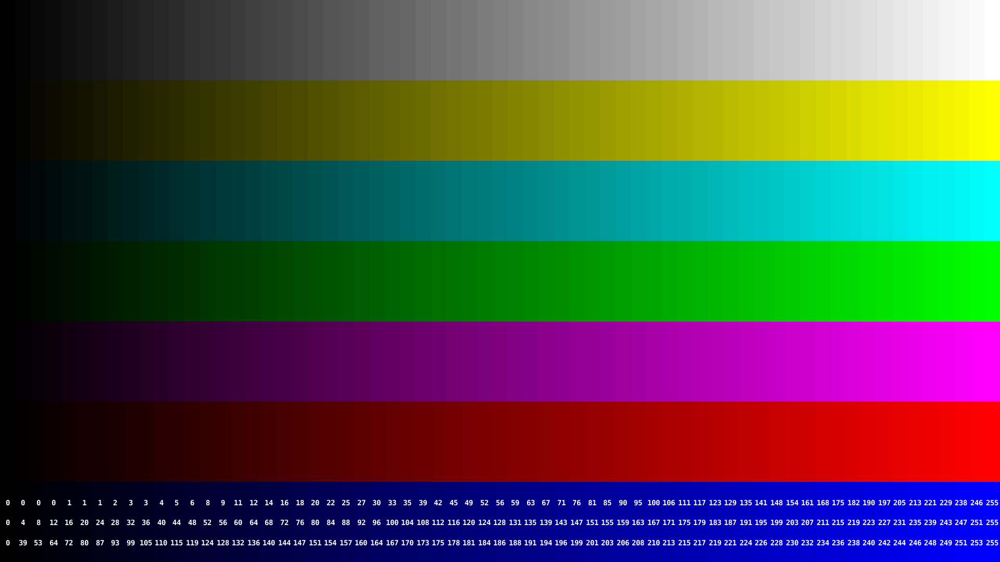
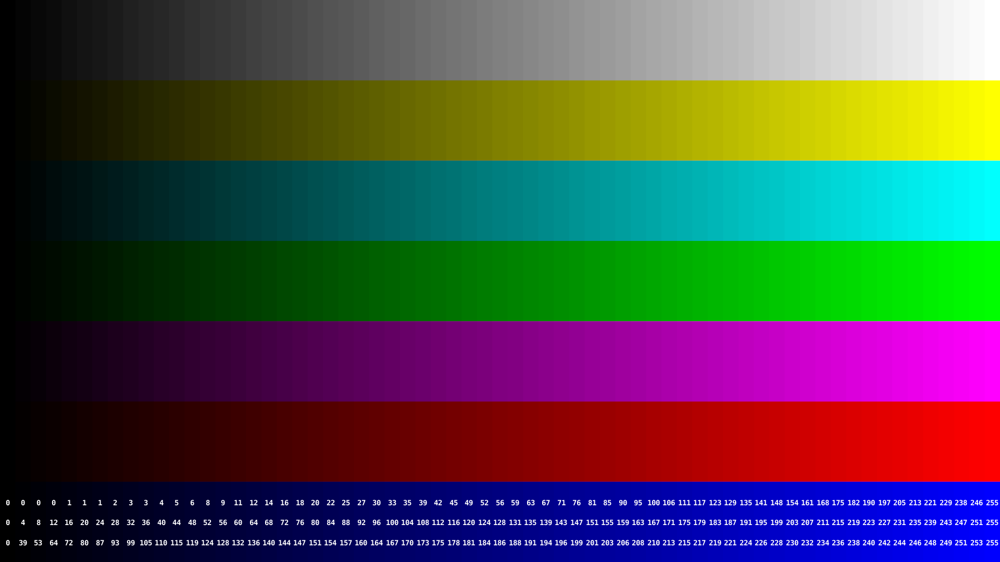

|
yuv422p10le encodes YUV444p encodes (Chrome Only) |
Reference PNGSource PNG file yuv422p10le encodesDefault Encode (terrible)Basic ffmpeg conversion, no colorspace specified, ffmpeg assumes bt601 colorspace. This is a terrible filter, significant color changes from PNG file. ffmpeg flags to add:Full creation commandline: OIIO idiff outputidiff -o ./chip-chart-yuvconvert/chip-chart-1080-noiccdiff.png ../sourceimages/chip-chart-1080-noicc.png ./chip-chart-yuvconvert/chip-chart-1080-noicc-basic.png b'Comparing "../sourceimages/chip-chart-1080-noicc.png" and "./chip-chart-yuvconvert/chip-chart-1080-noicc-basic.png" Colormatrix filter (close)Using colormatrix filter. colormatrix only supports 8-bit per component images. Visually its getting pretty close. ffmpeg flags to add: -sws_flags spline+accurate_rnd+full_chroma_int -vf "colormatrix=bt470bg:bt709"Full creation commandline: OIIO idiff outputidiff -o ./chip-chart-yuvconvert/chip-chart-1080-noiccdiff.png ../sourceimages/chip-chart-1080-noicc.png ./chip-chart-yuvconvert/chip-chart-1080-noicc-colormatrix.png b'Comparing "../sourceimages/chip-chart-1080-noicc.png" and "./chip-chart-yuvconvert/chip-chart-1080-noicc-colormatrix.png" Colorspace filterUsing colorspace filter, better quality filter, SIMD so faster too, can support 10-bit too. Visually pretty close to colormatrix, but slight improvement based on colormatrix values. ffmpeg flags to add: -sws_flags spline+accurate_rnd+full_chroma_int -vf "colorspace=bt709:iall=bt601-6-625:fast=1"Full creation commandline: OIIO idiff outputidiff -o ./chip-chart-yuvconvert/chip-chart-1080-noiccdiff.png ../sourceimages/chip-chart-1080-noicc.png ./chip-chart-yuvconvert/chip-chart-1080-noicc-colorspace.png b'Comparing "../sourceimages/chip-chart-1080-noicc.png" and "./chip-chart-yuvconvert/chip-chart-1080-noicc-colorspace.png" libswscale filter + flags (best)Using the libswscale library. Seems similar to colorspace, but with image resizing, and levels built in. This also has a number of libswscale parameters. Visually this is close to the above two, but slight improvement based on colormatrix results. ffmpeg flags to add: -sws_flags spline+accurate_rnd+full_chroma_int+full_chroma_inp -vf "scale=in_color_matrix=bt709:out_color_matrix=bt709"Full creation commandline: OIIO idiff outputidiff -o ./chip-chart-yuvconvert/chip-chart-1080-noiccdiff.png ../sourceimages/chip-chart-1080-noicc.png ./chip-chart-yuvconvert/chip-chart-1080-noicc-splinecolormatrix.png b'Comparing "../sourceimages/chip-chart-1080-noicc.png" and "./chip-chart-yuvconvert/chip-chart-1080-noicc-splinecolormatrix.png" YUV444p encodes (Chrome Only)Default Encode (terrible) Basic ffmpeg conversion, ffmpeg assumes bt601 colorspace, now at 444. Results look terrible. ffmpeg flags to add:Full creation commandline: OIIO idiff outputidiff -o ./chip-chart-yuvconvert/chip-chart-1080-noiccdiff.png ../sourceimages/chip-chart-1080-noicc.png ./chip-chart-yuvconvert/chip-chart-1080-noicc-basic444.png b'Comparing "../sourceimages/chip-chart-1080-noicc.png" and "./chip-chart-yuvconvert/chip-chart-1080-noicc-basic444.png" Colormatrix filter (close)Using colormatrix filter. colormatrix only supports 8-bit per component images. Visually pretty close, but still off. ffmpeg flags to add: -sws_flags spline+accurate_rnd+full_chroma_int -vf "colormatrix=bt470bg:bt709"Full creation commandline: OIIO idiff outputidiff -o ./chip-chart-yuvconvert/chip-chart-1080-noiccdiff.png ../sourceimages/chip-chart-1080-noicc.png ./chip-chart-yuvconvert/chip-chart-1080-noicc-spline444colormatrix2.png b'Comparing "../sourceimages/chip-chart-1080-noicc.png" and "./chip-chart-yuvconvert/chip-chart-1080-noicc-spline444colormatrix2.png" Colorspace filterUsing colorspace filter, better quality filter, SIMD so faster too, can support 10-bit too. Visually slight differences, but getting closer. ffmpeg flags to add: -sws_flags spline+accurate_rnd+full_chroma_int -vf "colorspace=bt709:iall=bt601-6-625:fast=1"Full creation commandline: OIIO idiff outputidiff -o ./chip-chart-yuvconvert/chip-chart-1080-noiccdiff.png ../sourceimages/chip-chart-1080-noicc.png ./chip-chart-yuvconvert/chip-chart-1080-noicc-spline444colorspace.png b'Comparing "../sourceimages/chip-chart-1080-noicc.png" and "./chip-chart-yuvconvert/chip-chart-1080-noicc-spline444colorspace.png" libswscale filter + flags (Match)Using the libswscale library. Seems similar to colorspace, but with image resizing, and levels built in. This also has a number of libswscale parameters. Looking at the oiio difference, this is the first one that has an identical result to the input image. ffmpeg flags to add: -sws_flags spline+accurate_rnd+full_chroma_int+full_chroma_inp -vf "scale=in_color_matrix=bt709:out_color_matrix=bt709"Full creation commandline: OIIO idiff outputidiff -o ./chip-chart-yuvconvert/chip-chart-1080-noiccdiff.png ../sourceimages/chip-chart-1080-noicc.png ./chip-chart-yuvconvert/chip-chart-1080-noicc-spline444out_color_matrix.png b'Comparing "../sourceimages/chip-chart-1080-noicc.png" and "./chip-chart-yuvconvert/chip-chart-1080-noicc-spline444out_color_matrix.png" libswscale filter + flags full-range (Match)Using the libswscale library. Seems similar to colorspace, but with image resizing, and levels built in. This also has a number of libswscale parameters. Looking at the oiio difference, this is the first one that has an identical result to the input image. ffmpeg flags to add: -sws_flags spline+accurate_rnd+full_chroma_int+full_chroma_inp -vf "scale=in_range=full:in_color_matrix=bt709:out_range=full:out_color_matrix=bt709"Full creation commandline: OIIO idiff outputidiff -o ./chip-chart-yuvconvert/chip-chart-1080-noiccdiff.png ../sourceimages/chip-chart-1080-noicc.png ./chip-chart-yuvconvert/chip-chart-1080-noicc-spline444out_color_matrixfull.png b'Comparing "../sourceimages/chip-chart-1080-noicc.png" and "./chip-chart-yuvconvert/chip-chart-1080-noicc-spline444out_color_matrixfull.png" |